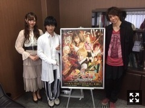

乃木坂46 公式ブログ
七つの大罪 The STAGE
2018.04.03 20:15
本日解禁されました
ヒロインのエリザベス役を努めさせていただきます。
今回が初めてで
今は正直不安やプレッシャーもありますが
情報解禁されてから色んな方からの反応や
期待の声を聞いて
それ以上のものでお返しができるように
この役を全うしていけたらなと思っています。
「七つの大罪」は原作、アニメ、
そして今夏公開される映画とあり、
この作品を愛しているファンの方がたくさんいると思います。
その方たちが持つ原作へのイメージや
私が演じるエリザベスへのイメージを大切にしながら
この作品と真摯に向き合って
自分自身としても新しい挑戦として頑張っていきます
公演日
◎東京公演 「天王洲 銀河劇場」
８／３〜８／１２ 計１５公演
◎大阪公演 「梅田芸術劇場」
８／１８〜８／２０ 計５公演
全２０公演となっています！
▽舞台公式WEBサイト
http://www.7-taizai-stage.jp/
▽舞台公式Twitter
https://twitter.com/7_taizai_stage
ぜひチェックよろしくお願い致します！
そして本日
取材を受けてきました！
これから解禁され次第
またお知らせさせていただきます！

メリオダス役、納谷健さん
バン役、有澤樟太郎さんと！
色んな声があると思いますし
原作があるものの実写化や舞台化は
賛否両論の声があるのも承知しています
全ての声を受け止めて
自分なりに頑張っていきます！
そして舞台に関しては未熟な部分も多く
不安も沢山ありますが
稽古期間からキャストの皆様含め
スタッフさんから色々な事を学びながら
新たな自分を求め全力で頑張ります。
髪色などライトでだいぶ変わってしまっていますが
ビジュアル撮影時のオフショットです！
皆様ぜひ劇場で
お待ちしています！
Source：梅澤美波 公式ブログ
Original：https://www.nogizaka46.com/s/n46/diary/detail/44311?ima=4954&cd=MEMBER
Original：https://www.nogizaka46.com/s/n46/diary/detail/44311?ima=4954&cd=MEMBER